Wielka Brytania jest państwem wielonarodowościowym. Mieszają się tu kultury i obyczaje Angielskie, Szkockie, Walijskie i Irlandzkie.
Jeśli planujesz je odwiedzić, lub chcesz dowiedzieć się więcej o tamtejszym życiu, musisz koniecznie poznać miejscowe zwyczaje. Miłego czytania!
F I L T R Y
anglia
walia
szkocja
irlandia
Guy Fawkes Night
Pochodzenie: Anglia
Uroczystość obchodzona 5 listopada, upamiętniająca nieudany zamach tytułowego Guya Fawkesa z 1605 roku, w którym prubował wysadzić budynek brytyjskiego parlamentu. W noc tą organizowane są pokazy fajerwerków, ustawiane są ogniska i odbywają się procesje oświetlone pochodniami. Według tradycji na wcześniej ustawianych ogniskach dzieci palą wcześniej zrobione kukły Guya Fawkesa.
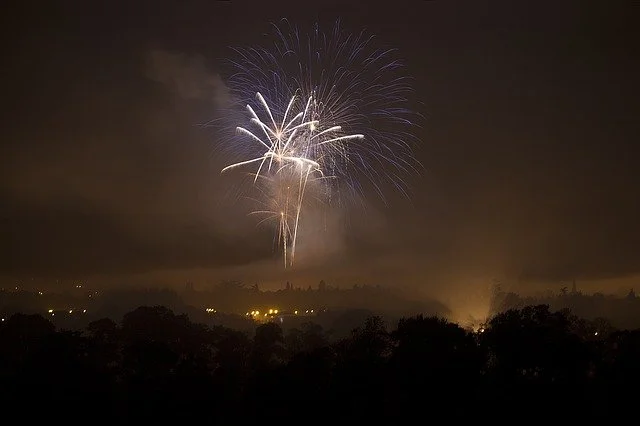
Shrove Tuesday lub Pancake Day
Pochodzenie: Anglia
Dzień obchodzony przed rozpoczęciem Wielkiego Postu. Świętowanie zakłada robienie i jedzenie naleśników. Nie są jednak typowe amerykańskie Pancake'i, są natopiast bardziej podobne do francuskich krep.
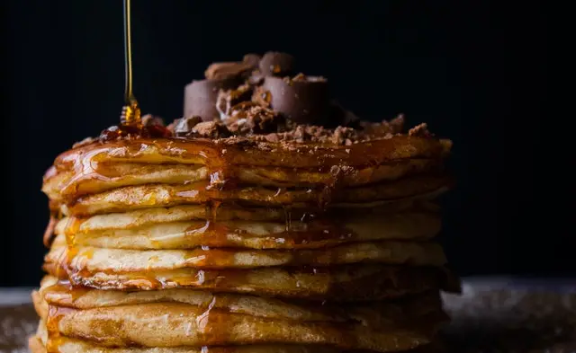
Boxing Day
Pochodzenie: Anglia
Obchodzony 26 grudnia, praktycznie jest przedłużeniem Świąt Bożego narodzenia i poza terenami Wielkiej Brytanii jest także obchodzony w wielu innych państwach Wspólnoty Narodów. W Anglii Boxing Day obchodzi się poprzez spędzanie czasu z najbliższymi, ponieważ większość jest zmęczona po pracy bądź ma wolne. Typowe tradycje zakładają oglądanie sportów, granie w gry, polowanie, wychodzenie na spacery oraz jedzenie resztek po Bożym Narodzeniu.
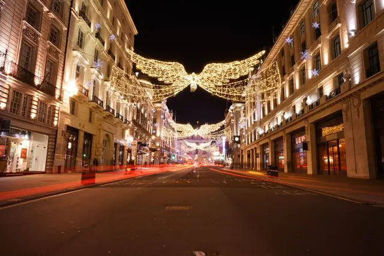
Poppy Day lub Remembrance Day
Pochodzenie: Anglia
Święto obchodzone 11 listopada, mające na celu upamiętnienie żołnierzy poległych w czasie pierwszej i drugiej wojny światowej. W tym dniu ludzie noszą na ubraniach sztuczne czerwone maki. W dniu tym w roku 1918 zostało podpisane zawieszenie bronii między państwami Ententy i Państw Centralnych. Początkową nazwą było Armistice Day, czyli dosłownie dzień zawieszenia broni, żeby uczcić koniec wojny. Jednakże z końcem drugiej wojny światowej, dzień ten zmieniono by od tej pory upamiętniał we wszystkich konfliktach, które się odbyły, i które się odbędą.
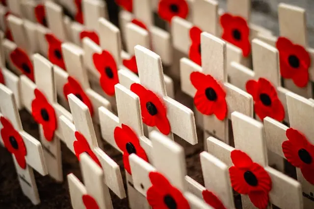
Tea Time
Pochodzenie: Anglia
Tradycja picia herbaty w Wielkiej Brytanii jest rozległa i nie ma konkretnych obrzędów, jednakże tradycja picia herbaty o godzinie piątej po południu trzyma się do dzisiaj. Samą herbatę anglicy piją na każdą okazję, od rzeczy prostych jak śniadanie obiad czy kolacja, przez wizytację od sąsiada i spotkania związanie z pracę, po picie ziołowego wywaru by się odstresować w sytuacji kryzysowej. Związana z piciem herbaty jest także tradycja zwana "dunking", polegająca na idealnym maczaniu ciastek w herbacie przed ich spożyciem. Co ciekawsze, tradycja ta jest źródłem debaty narodowej - jaka marka ciastek jest najlepsza w celu dunking'u?
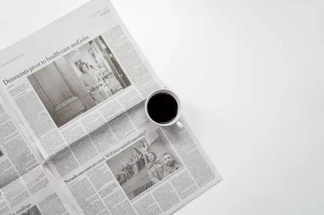
St. Patrick's Day
Pochodzenie: Irlandia
Uroczystość obchodzona zarówno w Północnej jak i Południowej Irlandii 17 marca upamiętniająca patrona Irlandii. Odbywają się w tym dniu wszelkiego rodzaju parady, wszyscy ubierają się na zielono i odbywają się wszelkiego rodzaju imprezy.
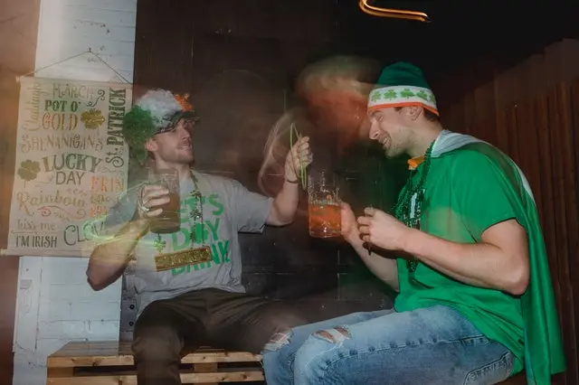
Cathedral Quarter Arts Festival
Pochodzenie: Irlandia
Cathedral Quarter Arts Festival - festiwal muzyki i sztuki odbywający się w maju. W skład festiwalu wchodzą wystawy sztuki, występy teatralne i muzyczne na przestrzeni dziesięciu dni.
Belfast Marathon
Pochodzenie: Irlandia
Belfast Marathon - dwudziestosześcio milowy bieg poprowadzony przez ulice Belfast odbywający się w maju. Istnieje również jego krótsza wersja będąca bardziej zabawą niżeli konkurencją. Po obu biegach następuje wielkie przyjęcie w ratuszu.
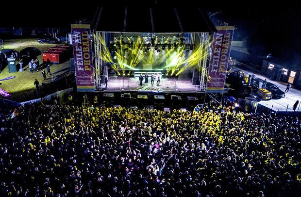
Orangefest
Pochodzenie: Irlandia
Orangefest - parada odbywająca się 12 lipca. W skład parady wchodzą tak zwani Orange Men, którzy są protestanckimi lojalistami ukazującymi swoją wierność Williamowi III, nazywanego również William of Orange.
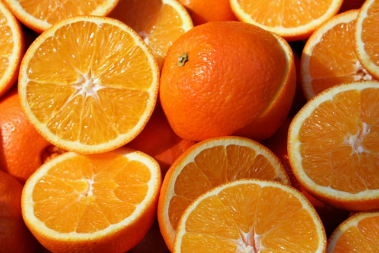
Belfast Festival
Pochodzenie: Irlandia
Belfast Festival - jedno z największych corocznych wydażeń w Europie, festiwal ten przyciąga około 50 tysięcy oglądających atrakcje, w skład których wchodzą teatr, tańce, muzyka popowa, rockowa jak i klasyczna, a także występy artystyczno-wizualne i komediowe. Sam festiwal trwa dwa tygodnie, od późniego października do wczesnego listopada.
Highland Games
Pochodzenie: Szkocja
Highland Games - swego rodzaju szkocka wersja rozgrywek olimpijskich z typowo szkockimi sportami, jak rzut młotem czy młotem. Rozgrywki odbywają się między majem a wrześniem każdego roku. Tradycyjnie, wszyscy zawodnicy noszą kultowy szkocki kilt. Pomiędzy konkurencjami odbywa się mnóstwo koncertów tradycyjnych zespołów z bębnami i dudami oraz tańce góralskie, wśród nich tak zwany Highland fling.
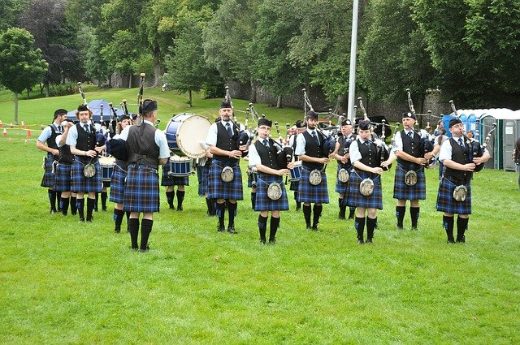
Haggis hurling
Pochodzenie: Szkocja
Haggis hurling - dosłownie rzut haggisem, swego rodzaju żartobliwy sport polegający na rzuceniu tradycyjnym szkockim haggisem najdalej jak można. Wymyślony przez Robina Dunseatha na zebranie klanów w roku 1977 jako żart, zostaje do dziś używany żeby zbierać fundusze na cele charytatywne na Highland Games. Według zasad gry, rzucony haggis musi być tradycyjnie przyrządzony i zdatny do zjedzenia po lądowaniu.
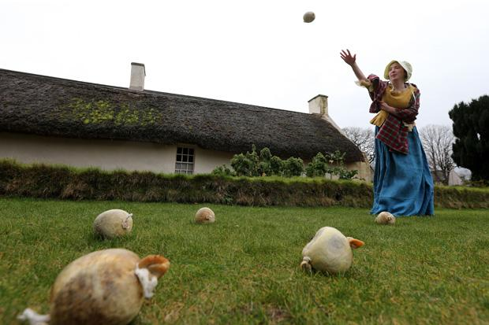
Hogmanay
Pochodzenie: Szkocja
Hogmanay - część obrzędów noworocznych w szkocji. Wśród nich można wymienić first footing, obyczaj polegający na przekroczeniu progu domu przez czarnowłosego mężczyznę niosącego tradycyjne podarunki, takie jak węgiel, chleb, sól, ciasto o nazwie black bun i kieliszek whisky. Zwyczaj ten jest brany bardzo na powarznie, a blondynów i rudych uważa się za pech. Inne obyczaj zakłada śpiewanie w kole piosenki Roberta Burnsa "Auld Lang Syne" kiedy wybije północ. Ciekawym obyczajem obchodzonym we wsi Burghead jest tak zwane burning the Clavie w dniu 11 stycznia. Obyczaj ten polega na spaleniu połowy beczki wypełnionej wiórkami drewna i smołą połączonej z kijem do noszenia tym samym gwoździem każdego roku. Samo święto wywodzi soę z roku 1752, kiedy zmieniono kalendarz z juliańskiego na gregoriański, co cofnęło czas o 11 dni. Mieszkańcy wioski Burghead postanowili więc obchodzić dwa końce roku, jeden według kalendarza gregoriańskiego i drugi według juliańskiego.
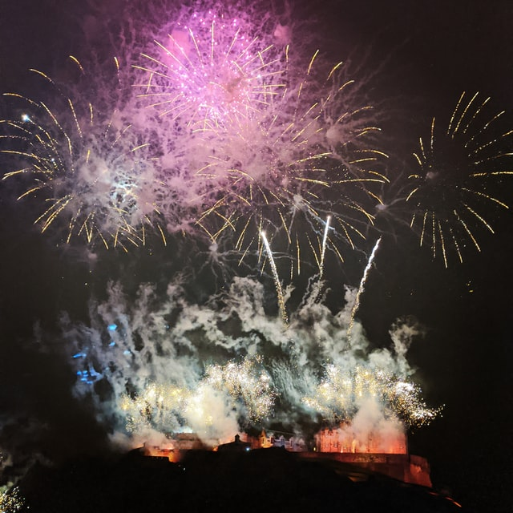
Burns Night
Pochodzenie: Szkocja
Burns Night - święto odbywające się 25 stycznia w celu upamiętnienia genialnego szkockiego barda, Roberta Burnsa, autora najbardziej znanych szkockich poematów. Jest obchodzone każdego roku w rocznicę urodzin poety od roku 1801. W tym dniu je się tradycyjne danie nazwane Burns supper, a na koniec wieczoru śpiewana jest najpopularniejsza pieśń śpiewaka zatytułowana "Auld Lang Syne".
Royal Edinburgh Military Tattoo - tradycyjna parada wojskowa odbywająca się przy pałacu w Edynburgu. Uroczystości zakładają granie muzyki, tańce wojskowe, śpiewanie "Auld Lang Syne" przez chór oraz przelot myśliwców nad pokazem. Całość jest genialnym pokazem sztuki wojskowośći Wielkiej Brytanii i zbiera około 220 tysięcy widzów na miejscu i ponad 100 milionów widzów przed telewizorami.
Z walijskiego dzień świętego Dawida, uroczystość obchodzona 1 marca upamiętniająca patrona Walii, świętego Dawida, któremu przypisuje się rozszerzenie wiary chrześcijańskiej na terenach Walii. W dniu tym odbywają się parady i procesje w tradycyjnych strojach. Dodatkowo, uczestnicy noszą tradycyjne znaki Walii - żonkile dla pań i pory dla panów.
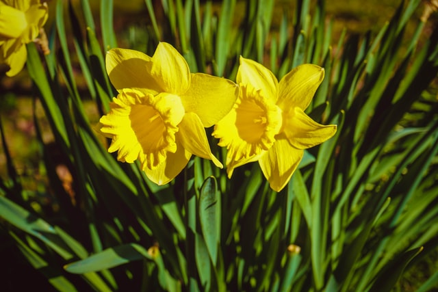
llwy caru
Pochodzenie: Walia
llwy caru - z walijskiego miłosne łyżki, są to specjalnie ozdabiane drewniane łyżki, które są tradycyjnie wyrabiane przez mężczyzn i dawane paniom jako dowód zainteresowania romantycznego. Historycznie, łyżki te były oznaką zwinności rąk mężczyzny i ich kompetencji, w skrócie dobry materiał na męża. Różne wyrzeżbienia miały inne znaczenia, przykładowo dzwony oznaczały ślub i rocznice, krzyże oznaczały wiarę, serca miłość, itp.
Eisteddfod - dosłownie festiwale poezji. W Walii odbywa się wiele takich festiwali poświęconych różnym tematykom, przykładowo Urdd Eisteddfod poświęcony młodzieży. Najsławniejszym jednak jest National Eisteddfod of Wales odbywający się w sierpniu. Lokalizacja corocznie zmienia się między północną a południową Walią, a sam festiwal jest najbardziej kompetetywnym festiwalem muzyki i poezji w całej Europie.
St Dwynwen's Day - walijska wersja walentynek. Święta Dwynwen była średniowieczną walijską księżniczką, która z powodu braku powodzeń w życiu miłosnym została zakonnicą, która modliła się, by kochankowie mieli więcej szczęścia niż ona miała. Samo święto obchodzi tak samo jak walentynki w każdym innym miejscu na świecie, i w praktyce jedyną różnicą jest nazwa i święty, któremu dzień jest poświęcony.
Holming
Pochodzenie: Walia
Holming - tradycja mająca miejsce w Boxing Day. Ostatnia osoba, która się w ten dzień obudzi zostanie obita ruzgami. Tradycja ta jest stosunkowo nowa, gdyż pierwsze instancje holmingu sięgają początków dziewiętnastego wieku.


{kind=link}
{kind=link}
{kind=link}
{kind=link}
{kind=link}
{kind=link}